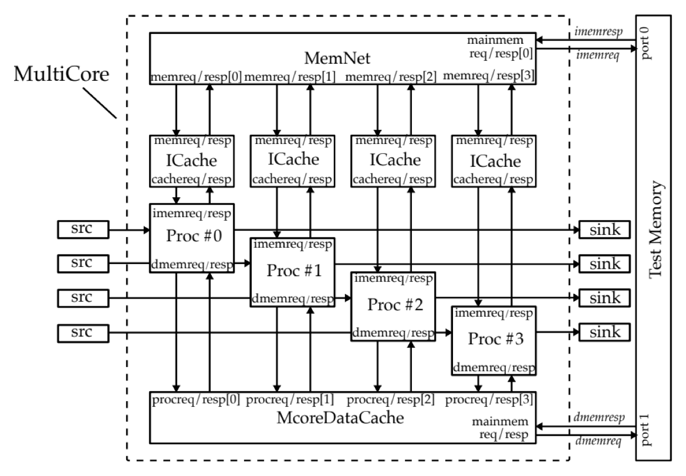

multicore risc-v processor

an extension of the five-stage TinyRV2 core I built in ECE 4750 into a four-core system, written in Verilog.
technical work
- added a 2-bit branch history table that predicts branches in decode.
- built a 2x2 mesh network-on-chip with XY routing and round-robin arbitration.
- integrated four cores with private instruction caches and a shared banked data cache over the mesh.
- verified the routers, mesh, and full four-core system with cocotb testbenches and multicore assembly tests.
the base pipeline and caches come from ECE 4750 labs, written with my lab partner Spencer Hadlock.
future directions
- add new layer of private L1 data caches with cache coherency network.
- complete UVM testbench
- novel additions, starting with measuring what small hardware assists for x86 emulation cost a RISC-V core.
- possible Rust-based compiler.